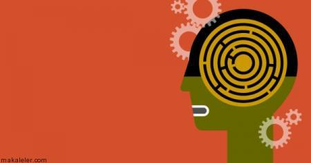

Savunma Mekanizmaları

Ünlü Psikanalist Sigmund Freud, bireyin gelişiminde en önemli evrenin 0-6 yaş arasında olduğunu söyler. Bu dönemde yaşanılan olumsuzluklar kişinin yaşamında tehdit arz eder. Freud’a göre insan yapısı üç aşamadan meydana gelir. Bunlar id, ego ve süper egodur. İd, kişinin saldırgan tarafını oluşturur. Ona göre çocukluk çağında tuvalet eğitiminin zorla verilmesi, çocuğun dayak yemesi, uzun süre anne sütünden yararlanması vb. sebepler ilerleyen yaşlarda istenmeyen davranışları da beraberinde getirir. İd, her bireyde var olan ancak bastırılan “saldırganlık ve cinsellik” güdülerinin varlığıdır. Süper ego ise bireyin toplumsal kurallara, örf ve adetlere aşırı derecede bağlanarak, sadece diğer insanlar için yaşamasıdır. Aşırı derecede kurallar bağlılık gösteren bu kişilik evresi, “bağımlı yaşamayı” ve var olandan başka hiçbir olasılığı düşünmemeyi beraberinde getirir. Ancak bireyde bir de kontrol mekanizması vardır. İd ve süper egoyu dengeleyen, bireyin mantıklı ve kontrollü düşündüğü ve davrandığı evreye de “ego” denilmektedir. Her insanın psikolojisinde id ve süper egodan izler olsa da, davranışta aşırılığa kaçılmamasını sağlayan bireydeki kontrollü güç, yani egodur.
Freud, “hipnoz” yöntemiyle insanların bilinçaltına attığı olayları çözmeye çalışmış, bilinçaltının nasıl oluştuğunu, hangi yaşantıların bireyin zihninde daha çok yer aldığını saptamak için uğraşmıştır. Onun bu yöntemine psikolojide “psikanaliz” denilir. Freud’a göre, her insanın yaşantısında farkında olduğu ya da olmadığı, benliğini sarsan yaşantılar vardır. Unutmaya çalışılsa da zaman zaman hareketlerinde veya düşüncelerinde baş gösteren, davranış bozukluklarına sebebiyet veren davranışlardır bunlar. İşte bu çatışmalardan, engellenmelerden kurtulmak için birey bilinç dışı hareketler sergiler. Bunlara da psikolojide “savunma mekanizmaları” denmektedir. Birey kendisine savunma mekanizması geliştirerek yaşadığı kaygıyı azaltmaya çalışır. Bilinçaltındaki olumsuzluklardan kurtulma yolu olarak da görülen bu mekanizmaları sık sık davranışa dökmek, kişilik sorunlarının yaşanmasına sebep olur.
Peki savunma mekanizmaları nelerdir?
İnkar Etme: Birey, başından geçen bir olayı kabullenmekte zorlanır ve onu hiç yaşanmamış gibi davranır. Örneğin hasta bir insanın hastalığını inkar edip tedavi görmeye yanaşmaması, yakınını kaybeden birinin bu durumu kabullenmemesi gibi durumlar başlangıçta bireyin her şeyi yolunda gördüğü ancak zamanla olumsuz etkileriyle karşılaştığı bir savunma mekanizmasıdır. Tamamen bilinçaltına atılan gerçeklerle yüzleşen bireyin hayatı olumsuz yönde etkilenir.
Çarpıtma ( Yön Değiştirme) : Bazen insanlar kendi eksikliklerini, kusurlarını görmekte zorlanırlar. Aslında kendilerinde var olan olumsuz davranışları başkalarında varmış gibi aktarırlar. Örneğin dağınık ve temiz olmayan biri toplulukta komşusunun ne kadar pasaklı olduğunu söyleyebilir, tembel bir öğrenci “Aslında ben çok zekiyim ama ders çalışmayı sevmiyorum. Ali çalışıyor da ne oluyor sanki?” diyerek yaptığı eylemi doğru, çalışan arkadaşının tavrını yanlış olarak gösterebilir. Bu davranış şeklini sürekli gerçekleştiren kişiler hem toplumdan dışlanır hem de kendi kusurlarını kabullenmeden yaşadıkları için mutsuz olurlar.
Mantığa Bürüme (Bahane Bulma) : Sigara kullanan insanlara, bırakması gerektiği söylenince genelde aynı yanıt alınır: “Atın ölümü arpadan olsun. Dünyaya çivi çakmadık ya, öyle de öleceğiz böyle de…” Yaptıkları yanlış harekete mantıklı bir bahane bulma çabası içindedirler. Böylece toplum içinde de hareketlerinin yargılanmaması ve yadırganmamasını hedeflerler. Yüceltme: Freud’un da tespit ettiği gibi bireyde var olan ve İd olarak adlandırılan saldırganlık, cinsellik, zarar verme gibi dürtülerin, sosyal bir aktiviteye dönüştürülerek, normalde dışlanan, hor görülen tavırların kabul görür hale gelmesidir. Örneğin insanları döven, kavgacı kişilikler toplumda sevilmez ve dışlanırlar ancak boksör, karateci gibi spora dönüştürüldüğünde, sosyal ve sportif faaliyetlere hizmet etmiş olunur.
Bastırma: İstenmeyen duygu, anı veya dürtülerin bilinçli olarak unutulmaya zorlanması ve bilinçaltına atılması durumudur. Bu duyguları unutmak için birey fazla enerji sarf eder ve sonuç olarak günlük hayatta unutulmuş gibi görülse de, hiç beklemediği bir anda, kişinin rüyalarında bu yaşantılar ortaya çıkabilir. Uyku bozuklukları, kişinin duygu kontrolünü kaybetmesi ve aşırı sinirliliğe sebep olabilecek bastırma mekanizması, bireyin gerçeklerden sürekli kaçmasına sebep olur.
Bunların dışında, bireyin eksik yönlerini kapatmak için bir başkasını model alma ya da kendisini toplumda üstün görülen başka birisiyle özdeşleştirme gibi savunma mekanizmaları da vardır. Bütün bu mekanizmaları her birey zaman zaman kullansa da davranışa dönüştürmek ve sık sık tekrarlamak kişilik bozukluklarını da beraberinde getirmektedir.
Ünlü Psikanalist Sigmund Freud, bireyin gelişiminde en önemli evrenin 0-6 yaş arasında olduğunu söyler. Bu dönemde yaşanılan olumsuzluklar kişinin yaşamında tehdit arz eder. Freud’a göre insan yapısı üç aşamadan meydana gelir. Bunlar id, ego ve süper egodur. İd, kişinin saldırgan tarafını oluşturur. Ona göre çocukluk çağında tuvalet eğitiminin zorla verilmesi, çocuğun dayak yemesi, uzun süre anne sütünden yararlanması vb. sebepler ilerleyen yaşlarda istenmeyen davranışları da beraberinde getirir. İd, her bireyde var olan ancak bastırılan “saldırganlık ve cinsellik” güdülerinin varlığıdır. Süper ego ise bireyin toplumsal kurallara, örf ve adetlere aşırı derecede bağlanarak, sadece diğer insanlar için yaşamasıdır. Aşırı derecede kurallar bağlılık gösteren bu kişilik evresi, “bağımlı yaşamayı” ve var olandan başka hiçbir olasılığı düşünmemeyi beraberinde getirir. Ancak bireyde bir de kontrol mekanizması vardır. İd ve süper egoyu dengeleyen, bireyin mantıklı ve kontrollü düşündüğü ve davrandığı evreye de “ego” denilmektedir. Her insanın psikolojisinde id ve süper egodan izler olsa da, davranışta aşırılığa kaçılmamasını sağlayan bireydeki kontrollü güç, yani egodur.
Freud, “hipnoz” yöntemiyle insanların bilinçaltına attığı olayları çözmeye çalışmış, bilinçaltının nasıl oluştuğunu, hangi yaşantıların bireyin zihninde daha çok yer aldığını saptamak için uğraşmıştır. Onun bu yöntemine psikolojide “psikanaliz” denilir. Freud’a göre, her insanın yaşantısında farkında olduğu ya da olmadığı, benliğini sarsan yaşantılar vardır. Unutmaya çalışılsa da zaman zaman hareketlerinde veya düşüncelerinde baş gösteren, davranış bozukluklarına sebebiyet veren davranışlardır bunlar. İşte bu çatışmalardan, engellenmelerden kurtulmak için birey bilinç dışı hareketler sergiler. Bunlara da psikolojide “savunma mekanizmaları” denmektedir. Birey kendisine savunma mekanizması geliştirerek yaşadığı kaygıyı azaltmaya çalışır. Bilinçaltındaki olumsuzluklardan kurtulma yolu olarak da görülen bu mekanizmaları sık sık davranışa dökmek, kişilik sorunlarının yaşanmasına sebep olur.
Peki savunma mekanizmaları nelerdir?
İnkar Etme: Birey, başından geçen bir olayı kabullenmekte zorlanır ve onu hiç yaşanmamış gibi davranır. Örneğin hasta bir insanın hastalığını inkar edip tedavi görmeye yanaşmaması, yakınını kaybeden birinin bu durumu kabullenmemesi gibi durumlar başlangıçta bireyin her şeyi yolunda gördüğü ancak zamanla olumsuz etkileriyle karşılaştığı bir savunma mekanizmasıdır. Tamamen bilinçaltına atılan gerçeklerle yüzleşen bireyin hayatı olumsuz yönde etkilenir.
Çarpıtma ( Yön Değiştirme) : Bazen insanlar kendi eksikliklerini, kusurlarını görmekte zorlanırlar. Aslında kendilerinde var olan olumsuz davranışları başkalarında varmış gibi aktarırlar. Örneğin dağınık ve temiz olmayan biri toplulukta komşusunun ne kadar pasaklı olduğunu söyleyebilir, tembel bir öğrenci “Aslında ben çok zekiyim ama ders çalışmayı sevmiyorum. Ali çalışıyor da ne oluyor sanki?” diyerek yaptığı eylemi doğru, çalışan arkadaşının tavrını yanlış olarak gösterebilir. Bu davranış şeklini sürekli gerçekleştiren kişiler hem toplumdan dışlanır hem de kendi kusurlarını kabullenmeden yaşadıkları için mutsuz olurlar.
Mantığa Bürüme (Bahane Bulma) : Sigara kullanan insanlara, bırakması gerektiği söylenince genelde aynı yanıt alınır: “Atın ölümü arpadan olsun. Dünyaya çivi çakmadık ya, öyle de öleceğiz böyle de…” Yaptıkları yanlış harekete mantıklı bir bahane bulma çabası içindedirler. Böylece toplum içinde de hareketlerinin yargılanmaması ve yadırganmamasını hedeflerler. Yüceltme: Freud’un da tespit ettiği gibi bireyde var olan ve İd olarak adlandırılan saldırganlık, cinsellik, zarar verme gibi dürtülerin, sosyal bir aktiviteye dönüştürülerek, normalde dışlanan, hor görülen tavırların kabul görür hale gelmesidir. Örneğin insanları döven, kavgacı kişilikler toplumda sevilmez ve dışlanırlar ancak boksör, karateci gibi spora dönüştürüldüğünde, sosyal ve sportif faaliyetlere hizmet etmiş olunur.
Bastırma: İstenmeyen duygu, anı veya dürtülerin bilinçli olarak unutulmaya zorlanması ve bilinçaltına atılması durumudur. Bu duyguları unutmak için birey fazla enerji sarf eder ve sonuç olarak günlük hayatta unutulmuş gibi görülse de, hiç beklemediği bir anda, kişinin rüyalarında bu yaşantılar ortaya çıkabilir. Uyku bozuklukları, kişinin duygu kontrolünü kaybetmesi ve aşırı sinirliliğe sebep olabilecek bastırma mekanizması, bireyin gerçeklerden sürekli kaçmasına sebep olur.
Bunların dışında, bireyin eksik yönlerini kapatmak için bir başkasını model alma ya da kendisini toplumda üstün görülen başka birisiyle özdeşleştirme gibi savunma mekanizmaları da vardır. Bütün bu mekanizmaları her birey zaman zaman kullansa da davranışa dönüştürmek ve sık sık tekrarlamak kişilik bozukluklarını da beraberinde getirmektedir.
Anıl